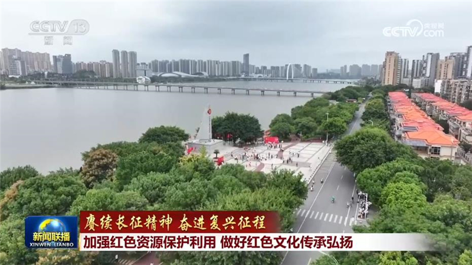
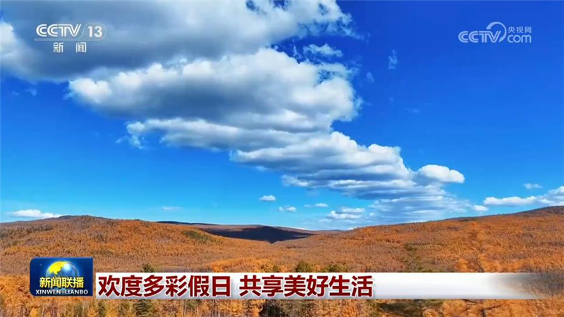
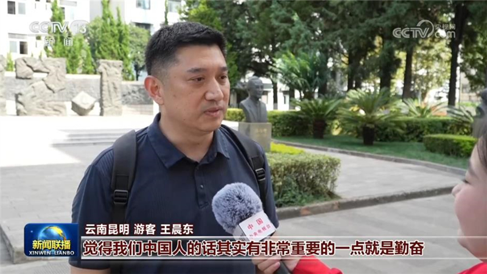
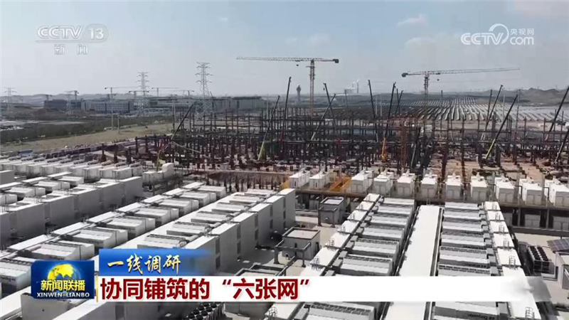
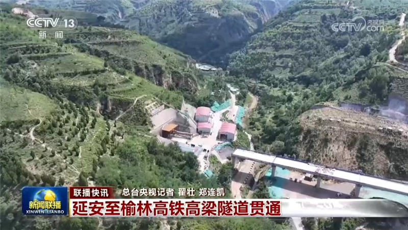
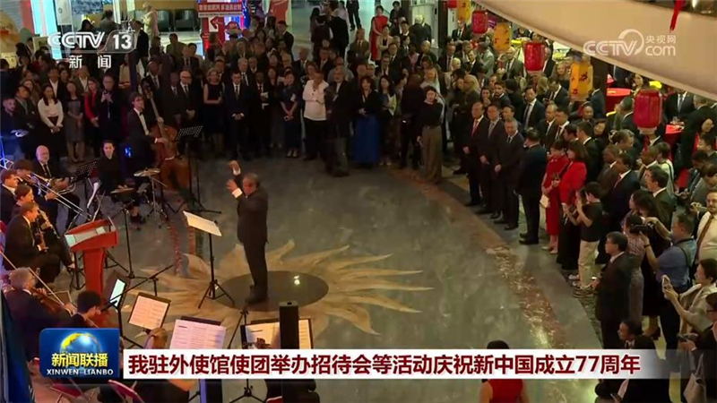
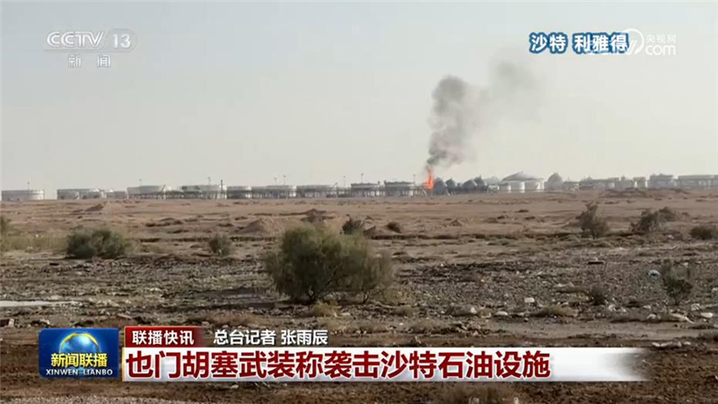
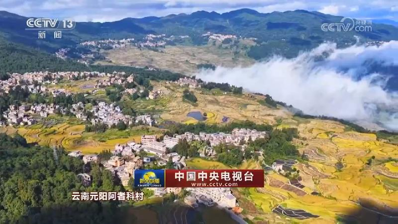

01

【赓续长征精神 奋进复兴征程】加强红色资源保护利用 做好红色文化传承弘扬
今年是中国工农红军长征胜利90周年，习近平总书记指出，我们要弘扬伟大长征精神，深入进行爱国主义教育和革命传统教育。沿着总书记指引的方向，我国深入推进长征文物和文化资源保护利用，积极挖掘长征精神深刻内涵。这个国庆，人们走进革命旧址、纪念场所，在致敬英烈、抚今追昔中凝聚起奋进新征程的强大精神动力。


今年是中国工农红军长征胜利90周年，习近平总书记指出，我们要弘扬伟大长征精神，深入进行爱国主义教育和革命传统教育。沿着总书记指引的方向，我国深入推进长征文物和文化资源保护利用，积极挖掘长征精神深刻内涵。这个国庆，人们走进革命旧址、纪念场所，在致敬英烈、抚今追昔中凝聚起奋进新征程的强大精神动力。

国庆假期，大江南北喜庆热烈，节日氛围浓厚，人们在丰富多彩的活动中，乐享假日幸福时光。
记者从交通运输部了解到，今天（10月4日）预计全社会跨区域人员流动量超3亿人次。这个国庆假期，科技赋能让交通出行更高效、安全。

中华优秀传统文化凝聚着中华民族自强不息的精神追求，国庆海采《说说你眼中的中国范儿》，我们一起感受中国人代代传承的精神力量。
今年以来，各地在城市更新过程中，聚焦城市闲置地块、边角地等零散空间利用，积极出台各项用地、配套激励政策，深挖存量空间潜力，让闲置资源变身便民惠民的城市新空间。

“十五五”开局之年，国家大力推进水网、新型电网、算力网、新一代通信网、城市地下管网、物流网等“六张网”建设。“六张网”不是彼此独立、各自为网的分散体系，而是深度耦合、相互赋能的有机整体。今天（10月4日）的《一线调研》我们来看“六张网”建设如何做好协同文章。
今天（10月4日），第二十届亚运会闭幕，中国体育代表团共获得169金89银83铜共341枚奖牌，蝉联亚运会金牌榜、奖牌榜榜首。在射击、射箭、田径、游泳、举重、场地自行车等有成绩纪录的项目上，代表团共打破8项世界纪录、11项亚洲纪录、22项亚运会纪录。在跳水、举重、射击、体操等我国传统优势项目上，继续保持了优势。基础大项全面发力。田径夺得17枚金牌，游泳勇夺30枚金牌。……
国庆假期进入第四天。预计今明两天（10月4日、5日），冷空气继续影响我国中东部地区，内蒙古中东部、华北、黄淮、江汉等地先后有4~6级偏北风，阵风7~9级；上述地区气温下降4~6℃，局地8~10℃。公众出游请适时调整着装，做好防风防寒措施。预计5日起，南方地区降雨天气趋于结束，天气转好，利于假期返程。

“百日千万招聘专项行动”推出四个线上招聘专场

连日来，我驻多国和国际组织使馆、使团举办国庆招待会等活动，庆祝新中国成立77周年。

也门胡塞武装称袭击沙特石油设施

金秋十月，祖国大地一座座美丽乡村风光秀美，山水人居相映成画。节目的最后，让我们走进田园村落，感受乡村振兴的蓬勃活力。